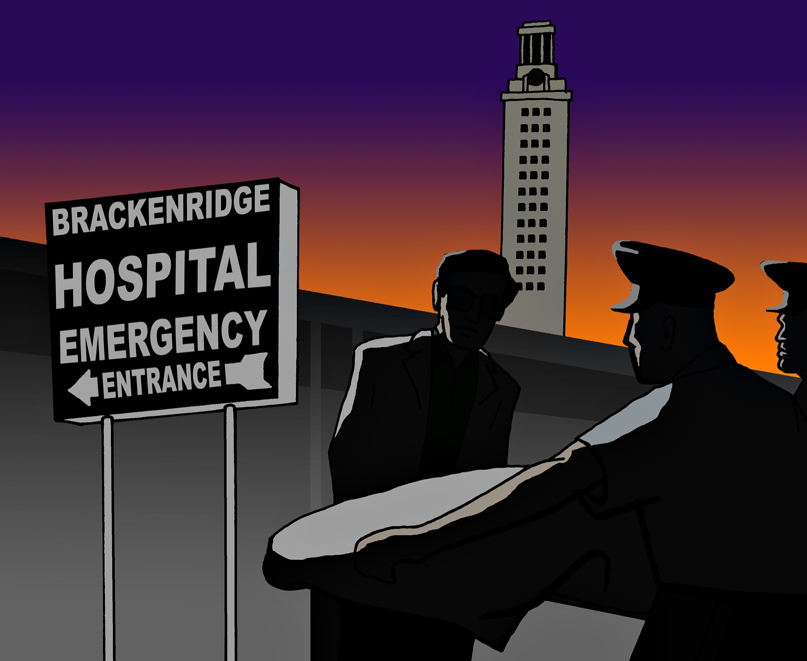

On an uneventful Monday morning at Brackenridge Hospital, nurse Norma White sent her staff home early. They had already finished the day’s work, and with many of the doctors out of town, there was no need to keep them around.
But one by one, the same nurses she’d just sent home soon returned to the hospital. They’d seen reports of a sniper shooting people from the top of the University Tower and raced back to Brackenridge before the emergency room staff had been notified of any incoming victims.
Across the hospital, Dr. Robert Pape was in a meeting with their chief of staff when a call came in from the ER: “I need all the help I can get. There’s a nut on the UT campus shooting people.”
While the shooter, a military-trained gunman named Charles Whitman, held a 96-minute “reign of terror” over the campus, the doctors and nurses got to work, preparing operating rooms and medical instruments for the urgent-care patients they were sure to receive.
Thirty-nine patients would be brought into the ER in the next hour and a half.
“I walked into the emergency room, and it was like a war zone,” White, a UT alumna who served as both operating room director and head intensive care nurse in 1966, said. “You saw people lying on stretchers with all these massive wounds, and I thought, ‘Oh my goodness, this is like something you would see on a battlefield.’”
While it was soon all-hands-on-deck in the operating rooms, only one of Austin’s cardiothoracic surgeons was in town to treat victims with critical chest wounds. Two of the others, Dr. Pape said, were volunteering in Africa; another drove to Lubbock that morning, oblivious to the news of the shooting until he arrived.
As the surgeon opened chest after chest, he also had to keep his own health in mind. To manage his diabetes, nurses came by to feed him sweetened orange juice and milk during the hours-long surgeries.
“They were ready to do whatever was necessary,” Dr. Pape said. “They made do with what they had and they did a good job.”
Soon, some unanticipated recruits arrived. Without so much as a call, local doctors, from general practitioners to dermatologists, came to help. By the end of the day, the ER check-in sheet listed the names of nearly 60 volunteer doctors, Dr. Pape said.
As doctors rushed in, they abandoned their cars in the ambulance driveway, their keys still in the ignition. A pileup of vehicles soon blocked the emergency room entrance, leaving civilians to clear them out of the way of the funeral home hearses that carried the shooting victims.
Locals also lined up to donate blood to the victims, White said.
The doctors and nurses worked until after midnight — more than 12 hours after the first bullets were fired — and many of the patients stayed in the hospital for weeks or, in some cases, months.
In the days before most hospitals had emergency rooms, Brackenridge was on the cutting edge, known as the only nearby trauma hospital. In the weeks before the shooting, everyone from interns to surgeons had run through their emergency protocol at a mock plane crash.
Instead of chaos or panic, Dr. Pape said that on the day of the shooting, the training kicked in.
“Every year we wondered if we would have to use our emergency procedure, and then we had the opportunity to do it,” Dr. Pape said. “That really helped to solidify our response to the shooter.”
Eleven of the patients brought to the hospital died that day or were already dead upon arrival. White credits the hospital’s trauma plans and the community’s support for saving the other 28 lives.
“No matter their position, the citizens of Austin came together,” White said. “Everyone was working as hard and as fast as they could. You had no time to think about anything other than those patients.”